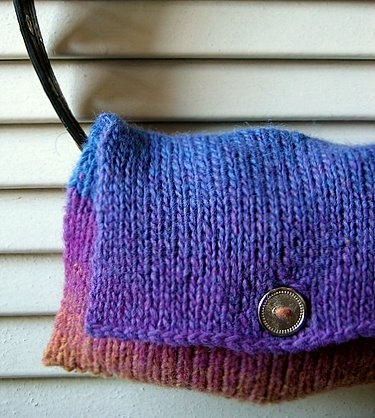
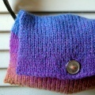
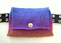

|
||
Premium Patterns Wintry Mix Mitts Love Bytes HawkeyeFree Patterns Kiddie Cadet Summerlin Ruffled Scarf Seamless DS Sock Simply Seamless Pouch Myriads of MushroomsExtras DIY Mitten Blocker Felt Patch Tutorial Yarn Dyeing Tutorial Needle Pouches Knitting Journal |
Simply Seamless PouchDesigned by Grace Schnebly
 Variety is the spice of life right? Well the three versions of this purse allow you to personalize it to your style! You can knit the pouch plain to make a funky clutch, attach a strap to make a cute little wristlet, or add belt loops if you’re the kind of person who is always on the go. It’s the perfect size to hold your cell phone, mp3 player, and keys. This super simple purse would make a great last-minute gift especially since there is no seaming required! This is a fun technique that allows you to knit a pouch flat, on straight needles. That’s right—no wrestling with DPNs or bulky seams here! Give it a try! Sizeapprox. 8" wide x 5" tall Materials1 ball of SWTC Karaoke in #198 New Splash (50% Soy Silk/50% Wool, 50 grams/100 meters) Gauge4 – 5 st*/inch on size 6 needles in slip stitch pattern. Pattern NotesSlip Stitch Pattern (stockinette): k1, bring yarn to front, slip st purl wise, bring yarn to back PatternCast on 64 sts on size 6 straight needles. Work in slip stitch pattern to end of row. Using this pattern stitch you will be creating a pocket. Continue working in this fashion until piece measures 5 inches; this will form the main pocket. Place every other stitch (32 sts total) onto the stitch holder. This will allow you open up the pocket. Bind off the 32 stitches which remain on the needles. Transfer stitches from the stitch holder to needles and continue working in stockinette stitch until piece measures 3” from beginning of flap, ending on a purl row. Knit 15 sts, BO 2 sts, knit 15 sts to end of row. Next row, purl 15 sts, CO 2 sts, purl 15 sts to end of row (the previous two rows create a button hole). Continue in stockinette stitch for four more rows. BO all stitches. Weave in ends. Block piece to prevent flap from rolling. Align button so that it matches the small hole created on the pouch’s flap. Attach the button to the front of pouch using the same yarn. Weave in all lose ends. Wristlet Varation Belt Pocket Varation If you like this pattern you should check out our Seamless Nintendo DS-Lite Sock pattern! |
   Recent ReviewsRecent Posts
 Our Favorites
|
| © 2007 KathrynIvy.com | ||
{kind=link}
{kind=link}